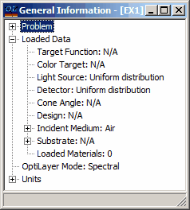
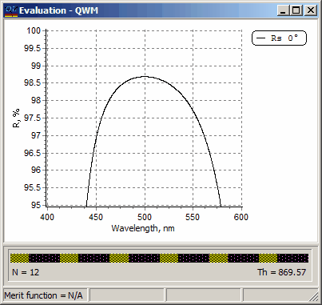
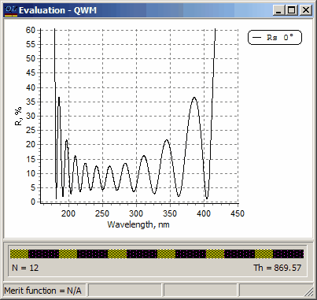

Exercise 1. Evaluation of quarter-wave mirror
Exercise 1. Evaluation of quarter-wave mirror
All necessary files for this exercise are located in the directory EX1. Select this directory using the Problem menu command. In SF Mode you need to use Import Problem Directory command (File Menu).
Open the Substrate database in the Data menu and Load file GLASS as a substrate. Using the bottom tabs in the Database dialog switch to the Layer Materials database and load MGF2 and ZNS as layer materials. After this switch to the Design database and load QWM as a design. In every database you can use the Edit command in order to check data inside each file. Data can be examined in both numerical and graphical forms (Preview page of corresponding editors).
Check the state of the General Information window, that should look as follows:

OptiLayer assumes that the default for the incident medium is air and loads the Air file automatically. You need to specify and load the refractive index of the incident medium only if this medium differs from air. Note that the same database is used to store refractive indices of substrates and the incident media.
In this example zinc sulfide and magnesium fluoride layer materials are non-dispersive for the sake of simplicity and have refractive indices 2.30 and 1.38, respectively. Note that after loading the first file, its name, accompanied by the character abbreviation H, appears in the General Information Window. After loading of the second file you can see both names in the General Information Window with the character abbreviations H and L (high and low) automatically assigned to the names in accordance with their refractive indices values. These character abbreviations are used in the design descriptions.
Examine the QWM design file using the Edit command of the Design database. This is a 12 layer quarter-wave mirror with the control wavelength 500nm. Refer to the Design Editor help for more details.
It is important to note that the link between the loaded layer materials data files and character abbreviations used in the design description is performed when the design is loaded from the disk to memory.
The connection between character abbreviations H and L and specific layer materials which have been loaded into memory is indicated in the General Information window. The refractive indices of these materials at the design control wavelength are used to connect design physical thicknesses with the design optical thicknesses specified in the design description.
|
Note: In OptiLayer layers are numbered starting from the substrate. |
Open Evaluation window with the help of Analysis->T & R & Phase command. Make experiments with various plotting options using the Analysis->Options dialog. For quick access to these options it is possible to use right-click pop up menu of the Evaluation window.
It is recommended to experiment with:
·Axis ranges and types (linear/logarithmic)
·Plotted characteristics (it is possible to use up to 50 various plots in each Evaluation window)
·Lines styles (solid, dotted, dashed, etc.) and colors
·Appearance of the design bar
·Legend and header settings.
For advanced use note that there is an ability to open additional Evaluation windows. As an example, use Analysis -> Additional option to display the main high reflection zone and intermediate zone separately as presented below. Both windows are displayed simultaneously and use different X- and Y-axis settings.


Use the Modify Design command in the Synthesis menu to make in-memory design modifications. Note that modifications are instantly reflected in the both Evaluation windows. All windows in OptiLayer are synchronized. This means that changes are reflected immediately everywhere. There is only one exception from this rule. Report windows created using the Results menu reflect the state of OptiLayer at the moment of the creation of the corresponding report.